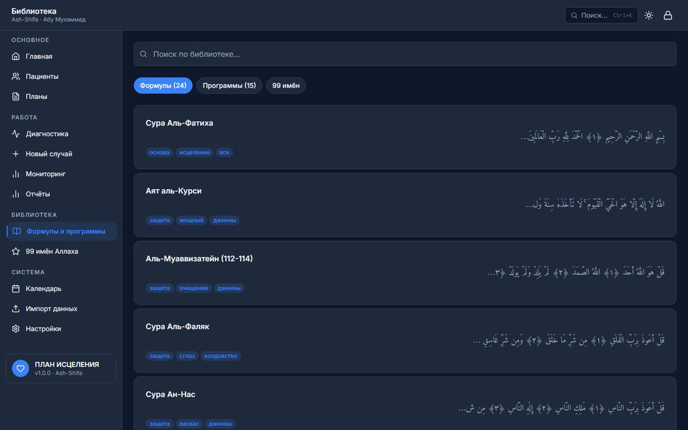

وَنُنَزِّلُ مِنَ الْقُرْآنِ مَا هُوَ شِفَاءٌ
«…то, что является исцелением и милостью для верующих»
Сура аль-Исра · 17:82
Почему именно этот курс
Не обещание «стать мастером за неделю» — прозрачность источников, реальная ответственность и рабочий инструмент после выпуска.
Прозрачность источников
Каждая книга и каждая формула помечены: прямая цитата Корана и Сунны, устоявшаяся практика или авторская методика — открыто, без выдачи одного за другое.
Безопасность пациента — не оговорка, а правило
Диагностика никогда не строится на боли или надавливании. Страдание и мольба пациента никогда не трактуются как «манипуляция» — это встроено в сам курс, а не приписано потом.
Не только теория — рабочий инструмент
Выпускник получает не просто сертификат, а систему RUKYA Pro: карточки пациентов, план исцеления, библиотеку формул с указанием источника — приём пациентов начинается не с чистого листа.
Экзамен по каждой книге, а не один тест «по всему»
16 отдельных экзаменов с порогом 70% и правом пересдачи — знания проверяются по мере усвоения, а не одной галочкой в конце курса.
Личная проверка автора
Абу Мухаммад лично триажировал 25 источников, прежде чем включить их в программу, и лично подтверждает оплату и доступ каждого ученика — не автоматическая воронка.
Можно начать бесплатно, без риска
Ознакомительные отрывки всех книг курса открыты сразу после регистрации — платите 30 000 ₽ только когда сами убедитесь, что курс вам подходит.
Для кого этот курс
Три уровня одного пути — от первого прочитанного аята до самостоятельного приёма пациентов. Начинать можно с нуля.
Ещё не читали рукью — ни разу
Базового чтения Корана достаточно (таджвид желателен, но не обязателен на старте). Курс начинается с основ убеждённости (якына) — с нуля, без предварительных знаний фикха рукьи. Цель — научиться грамотно читать рукью себе и близким.
Модули 1–3
Знаете основы, хотите разобраться глубже
Углублённая диагностика — по словам самого пациента, никогда через боль или надавливание (Модуль 4) — и направленное применение рукьи к конкретному случаю, плюс полный арсенал защиты от сглаза, зависти и колдовства.
Модули 4–6
Готовитесь принимать пациентов
Изгнание духовных сущностей, разбор реальных обезличенных кейсов под супервизией наставника и финальный практикум в системе RUKYA Pro — с этого уровня выпускник несёт ответственность за приём настоящих пациентов.
Модули 7–11
Как проходит обучение
Регистрация
Бесплатно, за минуту — email и пароль.
Читаете отрывки
Бесплатный ознакомительный кусок каждой книги — без оплаты, сразу после регистрации.
Открываете курс целиком
30 000 ₽ — пишете лекарю в Telegram, он высылает реквизиты и вручную подтверждает доступ.
Экзамен за экзаменом
Тест после каждой книги и итоговый тест по модулю — до сертификата.
Порядок необязателен — оплатить можно сразу, не дожидаясь отрывков.
Видео о курсе
«Рукья: анатомия предписания» — вводное видео о том, как устроен курс и что стоит за самим понятием заклинания. То же видео открывает Модуль 1.
Путь ученика — все 11 модулей
Экзамены и сертификат
После каждой прочитанной книги — короткий экзамен по ней самой (порог 70%), не общий тест «по всему сразу». После каждого модуля — итоговый тест. Все экзамены и их статус собраны на одной странице — «Тесты». Когда пройдены все 11 модулей, в кабинете открывается сертификат «Практик рукии» за подписью Абу Мухаммада — можно распечатать или сохранить как PDF.

Панель управления приёмом пациентов

Библиотека формул — каждая с указанием источника (Коран/Сунна)
Что вы получите вместе с сертификатом — система RUKYA Pro
После завершения всех 11 модулей и сдачи всех экзаменов выпускник получает не только сертификат, но и рабочий инструмент для приёма настоящих пациентов: карточки пациентов, план исцеления по каждому случаю, библиотеку из проверенных по источнику формул (Коран/Сунна) и 99 имён Аллаха, автоматический разбор симптомов — как черновик для проверки, не готовое решение (окончательный диагноз всегда пишет и подписывает сам раки, см. Модуль 11). Приложение работает офлайн — данные пациентов хранятся на устройстве самого раки, не в облаке. Не продаётся и не выдаётся отдельно от курса — только тем, кто прошёл обучение полностью.
Частые вопросы
Нужна ли предыдущая подготовка?
Нет. Курс начинается с основ убеждённости (якына) — с нуля, без предварительных знаний фикха рукьи.
Можно ли начать бесплатно?
Да. Регистрация и ознакомительные отрывки всех книг курса — бесплатны, без ограничения по времени.
Как устроена оплата?
Через личные сообщения в Telegram (t.me/ruqoq) — лекарь высылает реквизиты лично и подтверждает доступ вручную после оплаты. Отдельного платёжного шлюза на сайте нет.
Сколько длится курс?
Курс самостоятельный — проходите в своём темпе, жёстких дедлайнов нет.
Можно ли пересдать экзамен?
Да, экзамен по книге и тест по модулю можно пересдавать столько раз, сколько нужно, чтобы набрать порог 70%.
Что будет после завершения курса?
Доступ к системе RUKYA Pro — там выпускник ведёт приём настоящих пациентов, лично проверяя каждый диагноз и подписывая итоговое заключение.
بِسْمِ اللَّهِ
Начните с бесплатного уровня уже сегодня
Зарегистрируйтесь на сайте — сразу открыты бесплатные ознакомительные отрывки всех книг курса. Полный текст, экзамены и весь курс целиком — 30 000 ₽: напишите лекарю Абу Мухаммаду в Telegram, он вышлет реквизиты лично и подтвердит доступ.